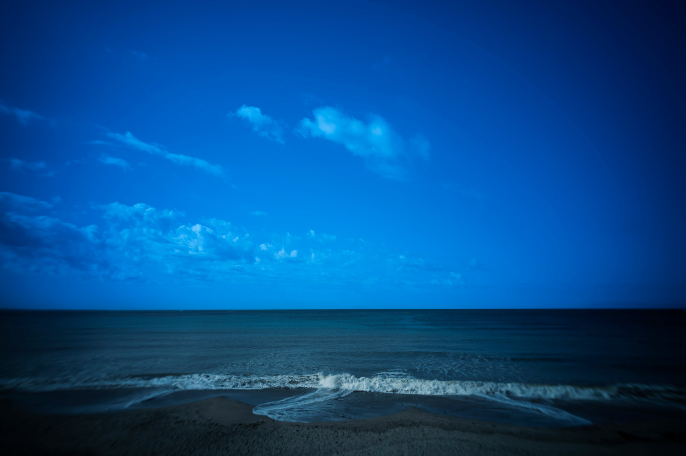
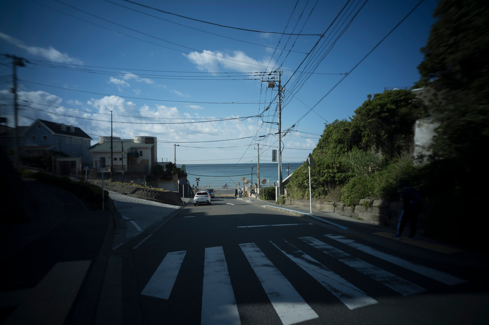
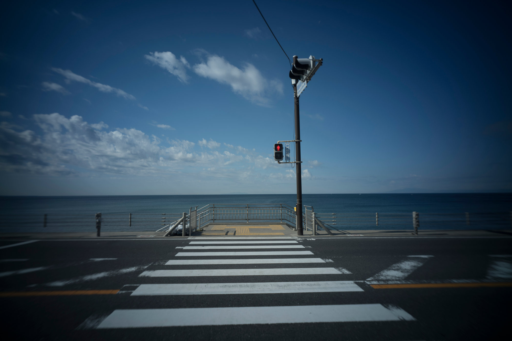
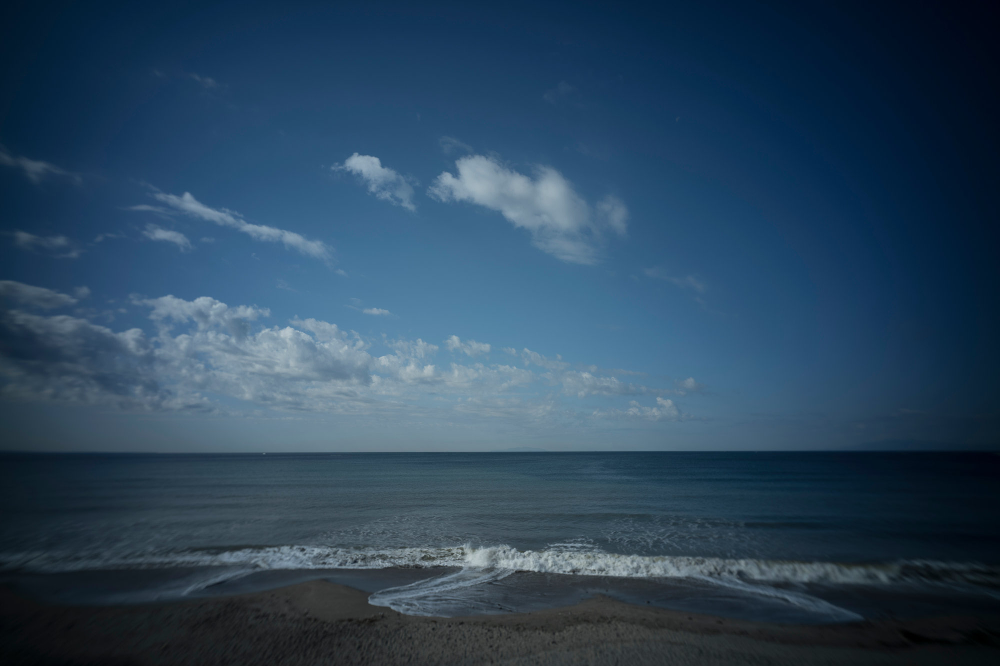
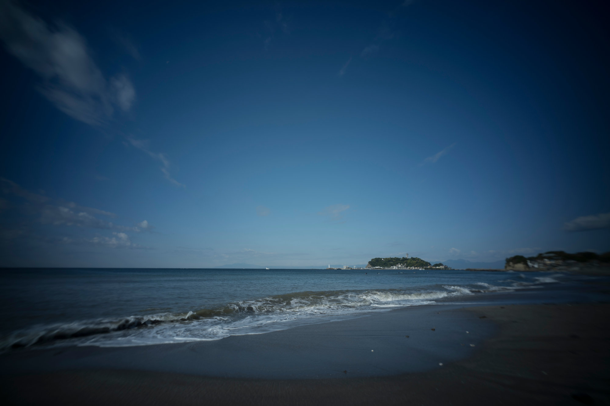
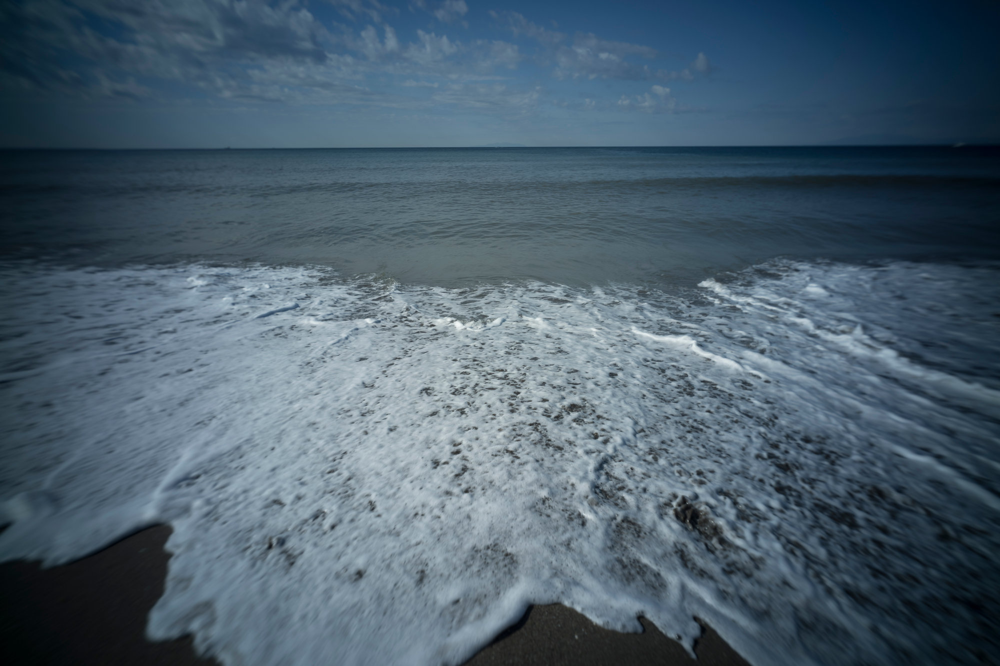
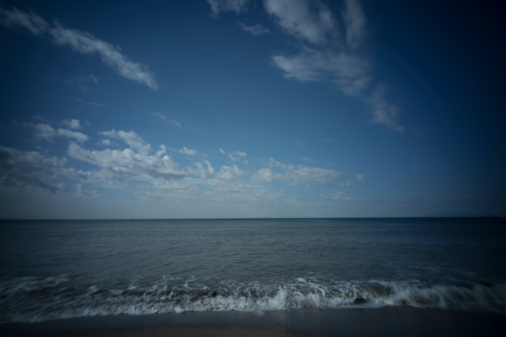

空と地上を、
それぞれの光で処理する。
RAWから空用・地上用の2つのWBで現像し、
SkyMaskで合成。夕焼け・ブルーアワー・青空の
プリセットで仕上げるまでをワンクリックで。

ブルーアワー プリセット適用後こんな状況に向いています
空を主役にした写真で、毎回同じ判断を繰り返していませんか。
空と地上の色温度が合わない
夕焼けの空に合わせると地上が色かぶりし、 地上に合わせると空の色が死ぬ—— その板挟みを毎回繰り返している。
マスク作成が毎回手間
空と地上を分けてそれぞれ処理したいが、 SkyMask を作るところから始める手順が ルーティン化できていない。
仕上がりの方向が安定しない
夕焼け・ブルーアワーなど狙いはあるのに、 毎回スライダーをいじって着地点が 微妙にブレる。
空表現で積み重ねてきた「判断」をツールとして外に出したものです。
RAW現像から SkyMask 生成・合成・カラーオーバーレイまで、 繰り返している手順をそのままスクリプト化しました。 プリセットではなく、実際のワークフローそのものです。
プリセットと何が違うか
Sidekick Sky Effect は「見た目を貼る」のではなく、RAW現像から合成・仕上げまでを一括で処理します。
RAW 2WB 合成の仕組み
同じRAWファイルを「空用WB」と「地上用WB」で2回開き、 SkyMask / GroundMask で合成します。 1枚現像では出せない、空と地上それぞれに最適な光を同時に実現します。
3つのプリセット
2WB合成の後、空・地上それぞれに最適化した カラーオーバーレイを適用します。 処理はPhotoshopのレイヤーとして残るため、 後から不透明度変更やオフが可能です。
- 夕焼け — 暖色×高温WBで空を焼く
- ブルーアワー — 低温WBで空をクールに締める
- 青空 — デイライトWBに青みを強化
- 空と地上それぞれ独立してコントロール
3つのプリセット — 設計と色の方向
それぞれWBの温度・カラーオーバーレイ・不透明度が最適化されています。
空を25000K超の高温WBで焼き、暖色のソフトライトを乗せて夕暮れの光を強調。 地上はやや暖色系で統一感を出します。
空を2500Kの極低温WBで開き、深みのある青に仕上げます。 地上は5000K系でニュートラルに保ち、空との対比を際立たせます。
デイライト付近（4800K）で空の青を強調し、COLORBLENDで純粋な青みを乗せます。 地上は陽光の温かみ系で晴天の自然な印象を出します。
作例 — 同じRAWに3プリセットを適用
同じRAWファイルにそれぞれのプリセットを適用した結果です。
カードをクリックすると拡大表示。← →キー または ＜ ＞ボタンで前後の作例と比較できます。

処理前の原画（Scene 1）
住宅街の細道の先に海が見える構図。SkyMaskが空と地上を正確に切り分け、
奥に見える空にのみプリセットを適用しています。
前景が複雑でも、SkyMaskが空領域を自動判定します。

処理前の原画（Scene 2）
横断歩道・信号と背後の海。空の占める比率が大きく、
プリセットによる色の変化が際立ちます。
地上（道路・信号）の色調はほぼ保ったまま、空だけを変えられます。

処理前の原画（Scene 3）
砂浜から見上げた積雲のある空。雲の表情がプリセットで大きく変わるシーンです。
RAWから空用・地上用の2つのWBで現像し、SkyMaskで合成した後に各プリセットを適用。
後から不透明度を変えたり、レイヤーをオフにして微調整できます。

処理前の原画（Scene 4）
砂浜から島を望む構図。水平線と空の比率が大きく、
プリセット3種の違いが最もわかりやすいシーンのひとつです。
同じ写真でも、プリセットを変えるだけで朝・夕・夜の印象を切り替えられます。

処理前の原画（Scene 5）
渚に打ち寄せる波を近距離で捉えた構図。地上（砂浜・波）の比率が高く、
SkyMaskの精度が問われるシーンです。
光の条件やシーンが変わっても、プリセットを選ぶだけで同じワークフローが走ります。

処理前の原画（Scene 6）
広角で捉えた海岸の空。雲が広く広がり、空の面積が最も大きいシーンです。
夕焼け・ブルーアワー・青空、3プリセットの効果の違いが最もわかりやすい構図です。
実行するとPhotoshopに SkyWB / SkyWB_blend / GroundWB のレイヤー構造で書き出されます。 プリセットのカラーオーバーレイも独立したレイヤーとして積まれるため、後から自由に調整できます。
使い方 — 3ステップ
PhotoshopでRAWフォルダを指定してスクリプトを起動するだけです。
ライセンス確認
初回起動時にライセンス画面が表示されます。 「後で登録（試用モードで起動）」を選ぶと、 30日間無料で全機能が使えます。
いつでも本番登録に切り替えられます
プリセットとオプションを選ぶ
夕焼け・ブルーアワー・青空からプリセットを選択。 「RAWから2つのWBで開いて合成する」をONにして RAWフォルダを指定し、「実行」を押します。
自動生成されます
レイヤーで確認・微調整
処理結果はPhotoshopのレイヤーとして書き出されます。 SkyWBの不透明度を変えたり、カラーオーバーレイをオフにしたりして 自分の方向に微調整してください。
自動保存します
30日間、無料でお試しください。
クレジットカード不要。ZIPを解凍してPhotoshopのスクリプトメニューから起動するだけです。
30日後は登録（有料）が必要ですが、試用中は全機能が使えます。